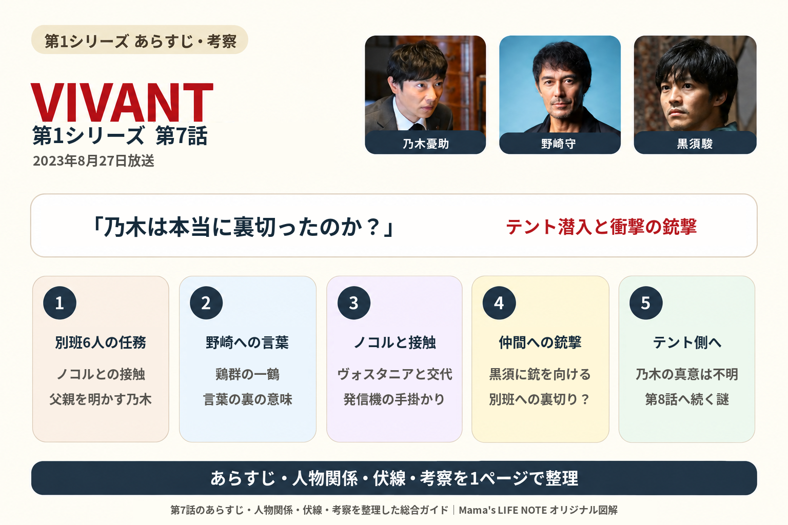
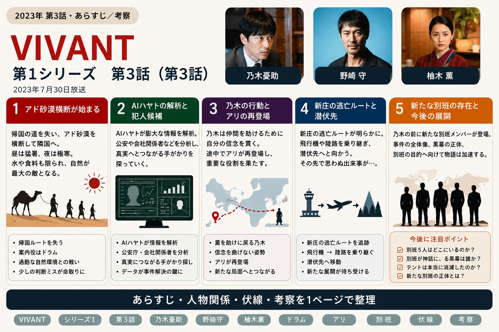

VIVANT シリーズ1
各話のあらすじ・人物関係・伏線・考察を、見返しながら分かりやすく整理していきます。
放送日順：

第10話｜乃木とベキの決着、別班の任務は続く
乃木の潜入作戦、ゴビの裏切りとフローライト採掘、新庄の正体、ベキとの決着、赤い饅頭に残る余韻を整理します。
第10話を見る →

第8話｜父・ベキとの再会とテントの実像
乃木の裏切り疑惑、父・ベキとの再会、ノコルの葛藤、テントの孤児支援、ムデール社と土地購入の謎を整理します。
第8話を見る →

第7話｜乃木憂助は本当に裏切ったのか？
別班6人の任務、野崎守への言葉、ノコルとの接触、乃木憂助の衝撃の銃撃とテントへの潜入を整理します。
第7話を見る →

第6話｜ベキと乃木憂助、F誕生の理由
父親の可能性、F誕生、野崎守の捜査、ジャミーンの手術、太田梨歩の解析、別班の集結を整理します。
第6話を見る →
第5話｜乃木の過去と父・ベキの正体
野崎が追う丹後隼人の過去、アリへの尋問、乃木家の家紋とテントの接点を整理します。
第5話を見る →
第4話｜山本の正体、乃木・黒須＝別班が判明
ブルーウォーカー太田、長野専務、山本の正体、そして乃木と黒須が別班と明らかになるまでを整理します。
第4話を見る →

第3話｜アド砂漠脱出と誤送金事件の犯人
薫救出、国境脱出、帰国後の誤送金調査まで。
第3話を見る →

第2話｜VIVANT＝別班？ テントと大使館の裏切り
誤送金事件とテントがつながり、「VIVANT＝別班」の可能性が浮上。大使館脱出とアド砂漠への逃亡までを整理します。
第2話を見る →
第1話｜140億円の誤送金から始まる逃亡劇
誤送金、F、VIVANTという謎、爆破事件、野崎との出会いまで。第1話の流れと伏線を整理します。
第1話を見る →
0 件